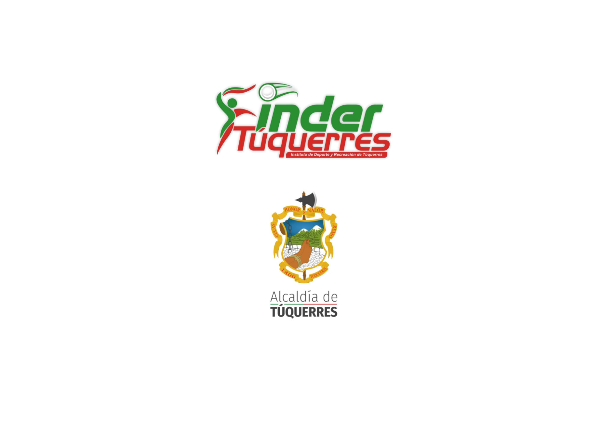
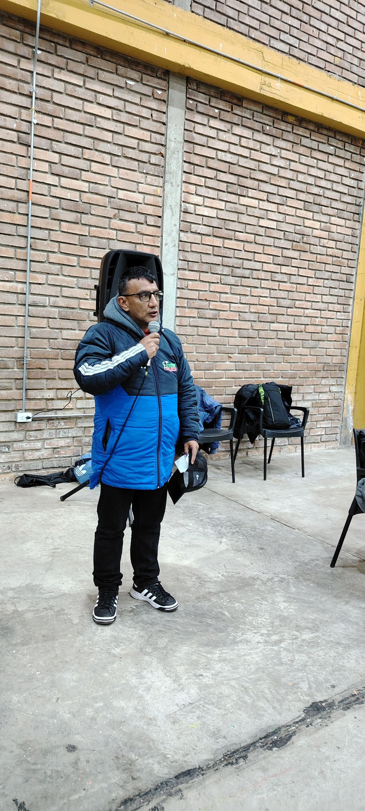
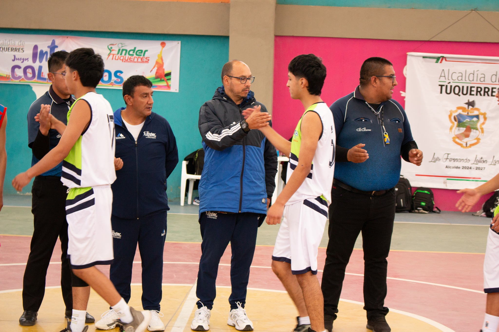
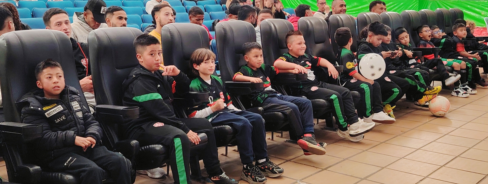

El Instituto de Deporte y Recreación de Túquerres nace como una iniciativa del gobierno municipal para promover la actividad física, el deporte y la recreación como herramientas de desarrollo social y bienestar. Surge ante la necesidad de fortalecer el talento local, crear espacios de sana convivencia y fomentar el uso positivo del tiempo libre. Su creación responde al compromiso de brindar a la comunidad programas deportivos y recreativos incluyentes, que contribuyan al crecimiento integral de niños, jóvenes y adultos en el municipio.
Les invitamos a seguirnos y estar pendientes de nuestras publicaciones para no perderse ninguna actividad. ¡Juntos promovemos el deporte y la recreación en nuestro territorio!
Descubre más



